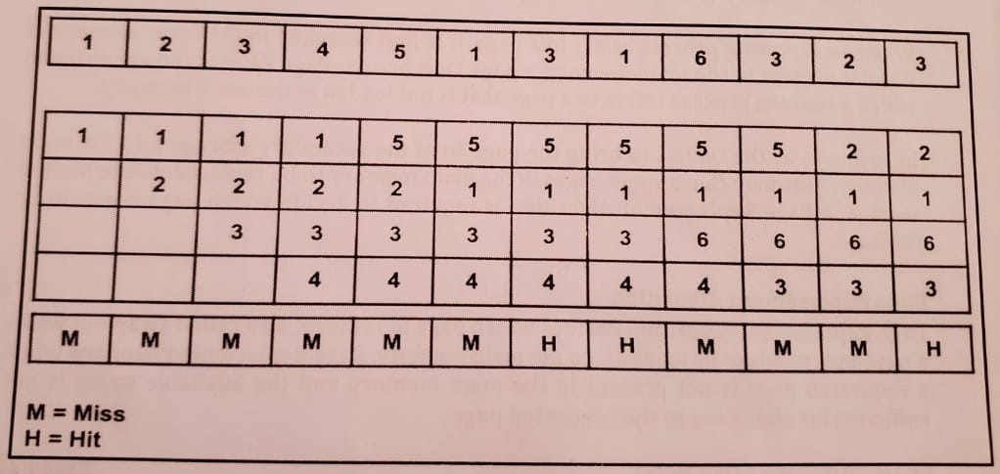

Page Replacement Algorithms First in First Out (FIFO):
This is the simplest page replacement algorithm. In this algorithm, the OS maintains a queue that keeps
track of all the
pages in memory, with the oldest page at the front and the most recent page at the back.
First in First Out (FIFO)
When there is a need for page replacement, the FIFO algorithm, swaps out the page at the front of the queue,
that is the
page which has been in the memory for the longest time.
Consider the page reference string of size 12: 1, 2, 3, 4, 5, 1, 3, 1, 6, 3, 2, 3 with frame size 4(i.e.
maximum 4 pages
in a frame).

Total Page Fault = 9
-
1. Initially, all 4 slots are empty, so when 1, 2, 3, 4 came they are allocated to the empty slots in
order
of their
arrival. This is page fault as 1, 2, 3, 4 are not available in memory.
-
2. When 5 comes, it is not available in memory so page fault occurs and it replaces the oldest page in
memory,
i.e., 1.
-
3. When 1 comes, it is not available in memory so page fault occurs and it replaces the oldest page in
memory,
-
4. the oldest page in memory, i.e., 2. When 3,1 comes, it is available in the memory, i.e., Page Hit,
so no
-
5. the oldest page in memory, i.e., 2. When 3,1 comes, it is available in the memory, i.e., Page Hit,
so no
replacement
-
6. occurs. When 6 comes, it is not available in memory so page fault occurs and it replaces
-
7. the oldest page in memory, i.e., 3.
-
8. When 3 comes, it is not available in memory so page fault occurs and it replaces the oldest page in
memory,
Le.. 4.
-
9. When 2 comes, it is not available in memory so page fault occurs and it replaces
-
10. the oldest page in memory. i.e., 5.
-
11. When 3 comes, it is available in the memory, i.e., Page Hit, so no replacement occurs.
Page Fault = 9/12 = 0.75 ie. total miss/total possible cases
Youtube link Explanation video of fifo algorithm
credits to Gate Smasher